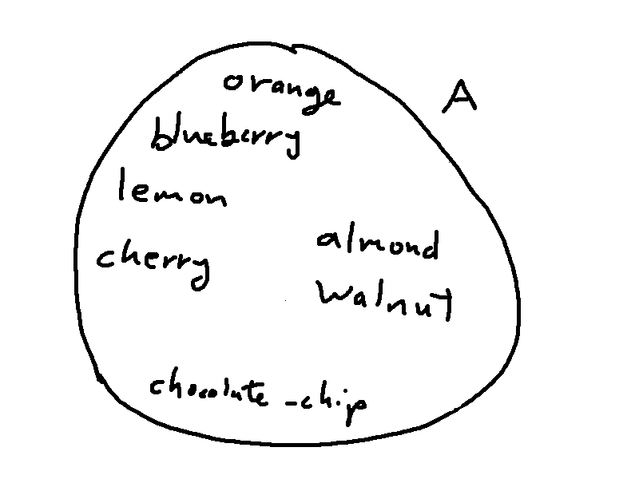
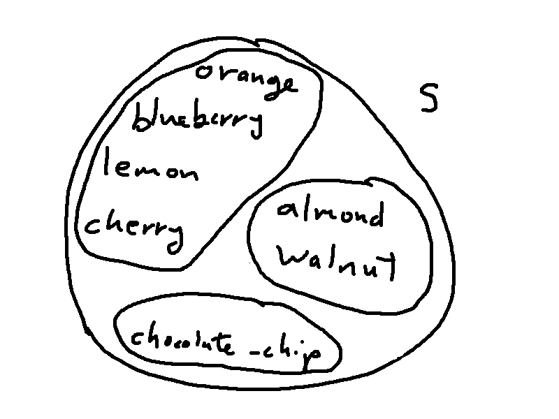
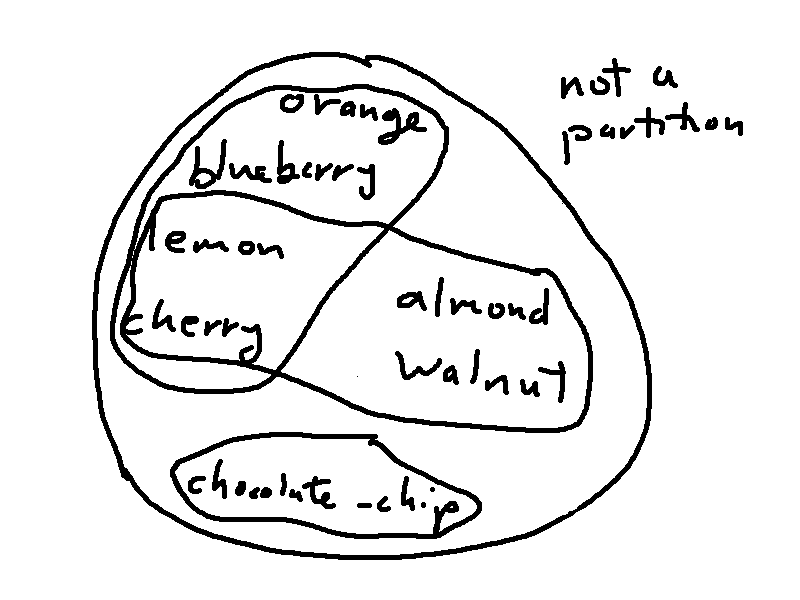
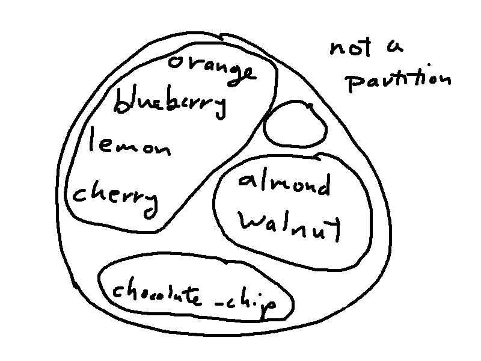
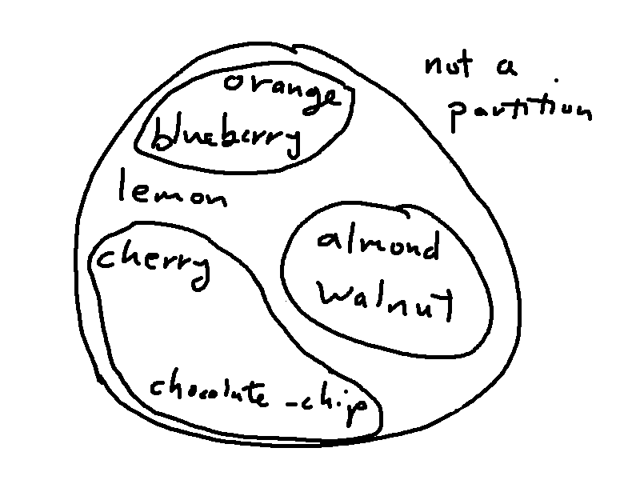

Let's look at the idea of a "partition" of a set. Remember our set A containing add-ons for muffins:
A = {add-ons} = {chocolate-chip, blueberry, orange, almond, lemon, cherry, walnut}
We can divide A into subsets based on the type of add-on. E.g. fruits, nuts, and candy. This is a called a partition.
 
Mathematically, we can implement a partition S as a set of subsets of A. Each subset represents one region in the partition.
S = {{chocolate-chip},{ blueberry, orange, lemon, cherry}, {walnut, almond}}
The three members of S are subsets of A. So the whole partition S is a subset of the powerset of A. In shorthand, \(S \subseteq \mathbb{P}(A)\). Recall that the whole powerset \(\mathbb{P}(A)\) is much larger and contains \(2^7\) subsets. A partition is a selection of certain subsets.
A partition isn't just some random set of subsets. It needs to have the look and feel of the picture above. Specifically:
So the three sets of subsets below are not partitions of A. The first has two subsets that aren't the same but both contain lemon and cherry. The second contains the empty set. In the third, none of the subsets contains lemon.
  
These properties mean that each partition has a corresponding equivalence relation and vice versa. So, in this case, the relation would be "same food group". Each subset in the partition is an equivalence class for the relation.
Let's do this a bit more formally. First, suppose that S is finite, so we can write S as \(S = \{A_1, A_2, ..., A_n\}\). Then the partition properties translate into:
But S might be infinite. For example, we could partition the integers by grouping each even number with the following odd number. Then we need a slightly more sophisticated notation.
The notation \(\bigcup_{X \in S} X\) takes the union over all the subsets in S. As you take later courses, you'll see similar constructions such as \(\max_{x \in S} f(x)\) for the maximum value that a function f produces when you feed in elements from S.
The final condition says that two subsets in S must either overlap completely (i.e. be the same) or not overlap at all.
Here's a partition example "ripped from the midterms".
A = {2,3,4,5,10,12}
Define \(F:A \rightarrow P(A)\) such that \(F(x) = \{y \in A \mid y \text{ is a factor of x }\} \)Work out the values of F(12) and F(5)
Now define \(S = \{F(x) \mid x \in A\}\)
List the members of S.
Is S a partition of A?
What is this question asking? Let's work through this piece by piece.
F(12) is a set that contains all the elements of A that are factors of 12. So \(F(12) = \{2, 3, 4, 12 \}\).
F(5) is a set that contains all the elements of A that are factors of 5. So \(F(5) = \{5 \}\).
The definition of S asks us to put all the elements of A through the function F and collect up all the outputs.
\(F(2) = \{2 \}\)
\(F(3) = \{3 \}\)
\(F(4) = \{2,4 \}\)
\(F(5) = \{5 \}\)
\(F(10) = \{2,5,10 \}\)
\(F(12) = \{2, 3, 4, 12 \}\)\(S \ = \ \{ \{2 \},\ \{3 \},\ \{2,4 \},\ \{5 \},\ \{2,5,10 \},\ \{2, 3, 4, 12 \} \} \)
Now we need to check whether S satisfies the three partition properties.
So it's not a partition.